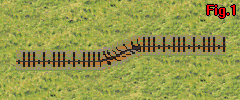
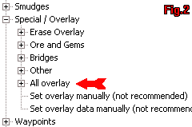

.:: Making the Train Logic work in RA2/YR ::.
Author - Blade | .::[Last Update - 24/03/2003]::.
For those modders and mappers out there that at least played and remember Tiberian Sun (TS), you will remember the presence of trains and train tracks on a number of multi-player (MP) and single player (SP) maps. However it is a little known fact that the logic for making the trains work in RA2 and YR is almost entirely still present. This tutorial will guide you through the nessesary steps to making the system work again and give some information on how to go about creating maps that use such features. The features are mainly aa eye candy in MP maps but can provide interesting objectives and features in SP maps where events are more controlled. The tutorial is divided into 3 sections that increase in advancement as we go. The first stage is just to make units that behave as trains, the second is to create useable train track terrain and the third is making maps with a combination of FA 0.98 and FA2 that feature the terrain and units. It should be noted at this point that while it is possible to create the terrain and functioning train units without ever altering art(md).ini or rules(md).ini, you will not get the full benefit from this tutorial. The train units can only be fully resurrected as part of a mod where new voxels can be provided for the trains.
.:: Creating the Train units ::.
Creating a unit that behaves as a train is simple. This section of the tutorial assumes that you know what sections of the rules/ini file belong to units and that if needed for a mod you could create new entries for a totally novel unit. All that is needed for a train unit is the addition/modifiction of the following entries to a land unit:
TechLevel=-1
IsTrain=yes
Locomotor={4A582741-9839-11d1-B709-00A024DDAFD1}
MovementZone=Normal
MovementRestrictedTo=Railroad
ImmuneToPsionics=yes
Firstly, the TechLevel prevents the unit being built. If it was allowed to be and was constructed by the player, the war factory would explode as the unit left. IsTrain=yes does several things. First, stops the train turning on the spot and being able to travel backwards down a track. Second is that it makes the unit destroy any unit it hits in its path with the C4 warhead and finally it prevents the unit being taken by a vehicle hijacker unit (some mods create this type of unit). The Locomotor, MovementZone define the movement parameters in terms of how the unit moves and accelerates, while MovementRestrictedTo=Railroad prevents the unit moving over any terrain but the railroad terrain that is normally never used in RA2/YR. The final entry ImmuneToPsionics=yes prevents the train being taken by Mind Control units because train units can behave oddly under human control where any point in the track can be set as a destination. This is especially true if the mapper has made use of switches and points that allow the train to move between otherwise seperate pieces of track. This feature was never seen in TS, but can be made to work with carful track layout and unit scripting. If you are wanting to make multi-carriage trains that follow as a real train would, you will have to set every unit that will be part of that to have these rules.ini settings. In addition, on the 'Engine' unit (the unit that the carriages will follow) you might want to add these settings to make movement behaviour more realistic for a train:
SlowdownDistance=700
DeaccelerationFactor=0.001
AccelerationFactor=0.01
On an advanced note for those who use the Terrain Expansion (TX) graphics, you will need to set any train voxels to have a Z min scale setting of 3 (with the Z scale max being an appropriate number) so they ride the tracks correctly.
Note: there will be a tutorial that will explain in detail how to set and adjust the scale information.
TechLevel=-1
IsTrain=yes
Locomotor={4A582741-9839-11d1-B709-00A024DDAFD1}
MovementZone=Normal
MovementRestrictedTo=Railroad
ImmuneToPsionics=yes
Firstly, the TechLevel prevents the unit being built. If it was allowed to be and was constructed by the player, the war factory would explode as the unit left. IsTrain=yes does several things. First, stops the train turning on the spot and being able to travel backwards down a track. Second is that it makes the unit destroy any unit it hits in its path with the C4 warhead and finally it prevents the unit being taken by a vehicle hijacker unit (some mods create this type of unit). The Locomotor, MovementZone define the movement parameters in terms of how the unit moves and accelerates, while MovementRestrictedTo=Railroad prevents the unit moving over any terrain but the railroad terrain that is normally never used in RA2/YR. The final entry ImmuneToPsionics=yes prevents the train being taken by Mind Control units because train units can behave oddly under human control where any point in the track can be set as a destination. This is especially true if the mapper has made use of switches and points that allow the train to move between otherwise seperate pieces of track. This feature was never seen in TS, but can be made to work with carful track layout and unit scripting. If you are wanting to make multi-carriage trains that follow as a real train would, you will have to set every unit that will be part of that to have these rules.ini settings. In addition, on the 'Engine' unit (the unit that the carriages will follow) you might want to add these settings to make movement behaviour more realistic for a train:
SlowdownDistance=700
DeaccelerationFactor=0.001
AccelerationFactor=0.01
On an advanced note for those who use the Terrain Expansion (TX) graphics, you will need to set any train voxels to have a Z min scale setting of 3 (with the Z scale max being an appropriate number) so they ride the tracks correctly.
Note: there will be a tutorial that will explain in detail how to set and adjust the scale information.
.:: Creating Track Terrain ::.
Normally in RA2/YR the train track overlay and tiles are residual from TS. This means that they are the incorrect pallet (one of the TS iso***.pal files) although they will work correctly and do have all the art and rules settings to be placed and work. FA2 unfortunately has a crippled overlay list thanks to EA licencing of the program from Matze who made it and removing everything obsolete that could be used. As a result FA 0.98 is needed to place them instead (see next section). Okay, so we have a limited selection of single width track overlay and track slope tiles, but they look awful. The solution is to design new overlay .shp files and new tile .tmp files (they never use the extension .tmp though, its always the theatre extension as they are theatre specific). If you have some special ideas for your mod on exactly how you want the track to look, then you'll have to get a good 2D/3D artist to create some new images in the correct perspective. However as of version 2.0, the Terrain Expansion (http://tx.cannis.net) contains an extensive ready made set of train tracks including all the single track overlay, forked track overlay, crossing and track end overlay, slope tiles, switch and road crossing tiles, tunnel tiles and under bridge fix tiles. It should be noted that all this artwork was done largely by DJBREIT with some help from myself and thus if you make use of it, we expect to be listed in the credits for your work. If you are integrating the TX with your mod, you can simply alter the rules(md).ini overlay sections* for the map making section below to make the overlay work correctly, otherwise you will need to add them to each map that uses trains and tracks.
.:: Creating Train maps ::.


The TX v2.0 or higher installed to the RA2 folder.
Extracted copies of the theatre.ini files from the TX .mix file all in the RA2 folder.
The FAData.ini and FALanguage.ini files provided with the TX v2.0 and higher.
With this done, you need to load your copy of FA2YR v1.01 or higher. Just place some track overlay in an appropriate formation, a slight bug is that in the FA2 editor depending on the theatre, it may appear that the overlay is the old TS overlay or the placeholder graphics depending on what piece you are using (only Temperate and Urban look correct for some reason) [Fig01]. Don't worry it will look correct in game when you run the map. The overlay can be accessed from the menus on the left side [Fig02], but not from the overlay dropdown (even in FA2YR v1.2), so you need to have a reference as to what overlay corresponds to what direction.
Now that you have the idea of placing overlay, you can start to build up simple level tracks. However with the TX sets you can place other features using tiles. If you place a tile feature such as switches (points), you must place them end on to overlay pieces, the overlay should not go over the tile. If you do place the overlay onto the tile, you may get graphical anomalies on the track in game. One interesting set of tiles you may like to try out are the train tunnel tiles. These combine the previous TX fix that enabled the tunnels in RA2/YR with the train features. You place them end on to track overlay or other tiles as normal, but you don't link the two ends of the tunnels with tracks. Instead you need to lay down tunnel "Tubes", but this is beyond the scope of this tutorial.
Now that you have your track you need to set up some train units and script them to move around the tracks. You can have single train units arrive as a create team trigger onto a cell that has track overlay, but if you want a longer train, you need to pre-place units on the map either outside the visible area (where you will need to place some track anyway for the train to come in off) or at a startpoint within the map. As you place the units, you need to be aware of the fact that units placed on the map to start get assigned an ID number in the order that they are placed (first unit placed is unit 0, second is 1 and so on). You can see the ID number of a unit on the map by placing the cursor over the cell the unit occupies and looking in the bottom left of the main FA window in the status bar. Here you will see various info such as the unit name, house it is assigned to and such, but you are only interested in the "ID " number. Place the train units in order starting with the locomotive and then placing carriage units. Make note of each units ID number and then double click on the locomotive (the front unit that the others are supposed to follow). A little window pops up where you can change various aspects of the unit. You might want to change the facing of the unit so it points in the right direction here (you will need to make sure all the units are facing the same direction to start with unless they are on a corner), but the main thing you are interested in is the "Follows ID" option (this was just known as "Flag 4" in FA 0.98) that should read "-1". Change this to the ID number of the second unit in the train. This tells the game that for the first unit in the train (the locomotive), it should have whatever unit on the map has the ID number you put into the options window follow it around. In this case its set to be the unit behind it in the train. Now double click on the second unit of the train and set its "Follow ID" setting to be the ID of the third unit. Repeat this process on ever carriage except the last carriage. Since the last unit doesn't have a follower, you leave the entry as -1. This sets up your train so that when the first unit is told to move in game by a teamtype script action, all the other units will follow it in a chain just like a real train does.
To set up your train to actually move on the map, you need to create scripts, taskforces, teams and triggers using the editors in FA2 (turn off beginner mode if it is active). The following is an adaption of instructions by RVMECH for FinalSun (the TS map editor also made by Matze).
-- To make the train move with a script:
1. Place a waypoint (lets say 10) in the same Cell where the locomotive (first train unit) is placed.
2. Place more waypoints (such as 11, 12 and so on) somewhere else on the track.
-- Create a new Script (name it "Trainmove" or whatever you want) with actions in this order:
action type: 3 (move to waypt), Waypoint: 11
action type: 5 (guard area), Time units: 15
action type: 3, Waypt: 12
action type: 5, Time: 15 (if you left the script here the train would stop at this WP permenantly, you can have more destinations)
.. action type: 3, Waypt: 10
action type: 5, Time: 15
action type: 6 (jump to action ), : 1 (this would be for a loop track script where the train goes round and round)
-- Create a Taskforce (Called "Locomotive" or some other relevant name) of 1 LOCOMOTIVE unit (Whatever the rules<md>.ini name of the first unit is). Do not put any of the other units into the taskforce, only the first unit.
-- 1. Create a Team (Named something like "LocoTeam"):
2. Set Waypoint to 10
3. Set House to the SAME House of the LOCOMOTIVE unit that is already placed on the map (probably Civilian for an MP map).
4. Uncheck all checks (so the boxes have no check mark in them).
5. Set the correct Script (Trainmove) and Taskforce (Locomotive).
-- Create a new trigger with the following:
Event type: 13 (Elapsed Time), Time: 10
Action type: 4 (create team, used to make a team with units already on a map), Team: LocoTeam
-- If you encounter errors when trying to play the map, check all settings again.
Now when you play your map, after the set time the train should begin to move around its course. You can use other events as the trigger such as players crossing a certain cell or certain things getting destroyed. You should note that you have to be careful where you place waypoints if you are using switches because you don't want a train to try and go the wrong way through a switch corner (the train units can do this as the terrain types on the cells don't tell the game the direction that the track approaches the corner).
.:: *Rules(md).ini Overlay Setting Ammendments ::.
These are needed to make the units interact with the overlay correctly. They must be added either to a map file (for a TX map) via text editing or to a mod's core rules.ini files. To add to a map file you can use the .ini import feature of FA2YR and import from the track.ini file provided
.:: Track.ini ::.
Track.ini
Size: 4 kbs
Downloads: 315

Size: 4 kbs
Downloads: 315